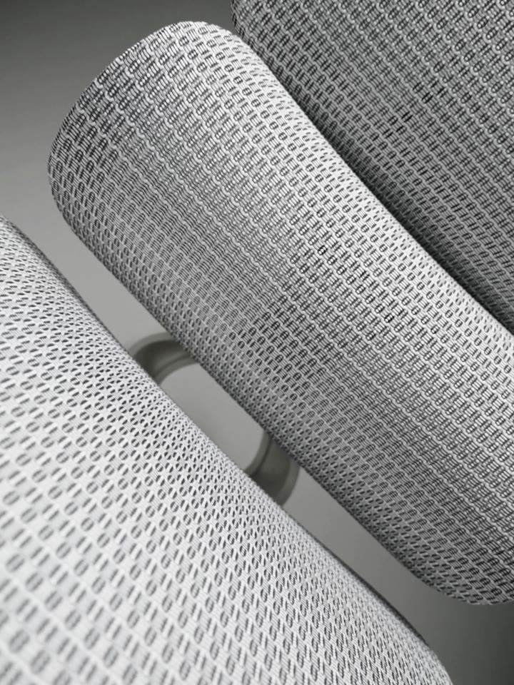
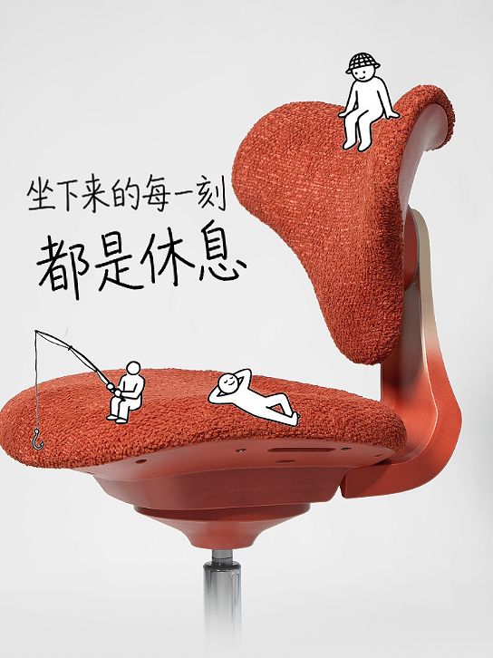
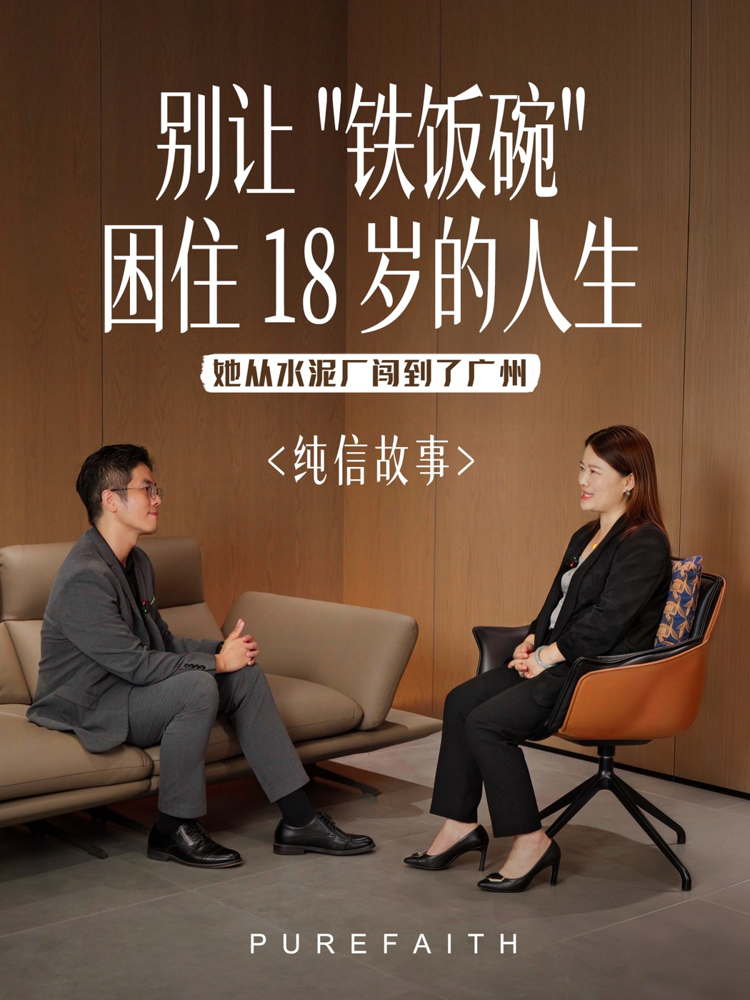
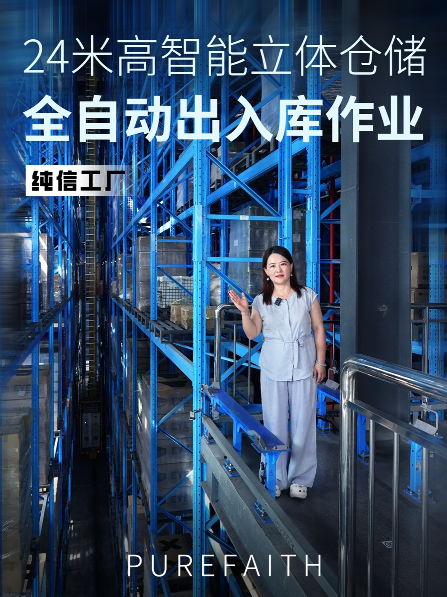
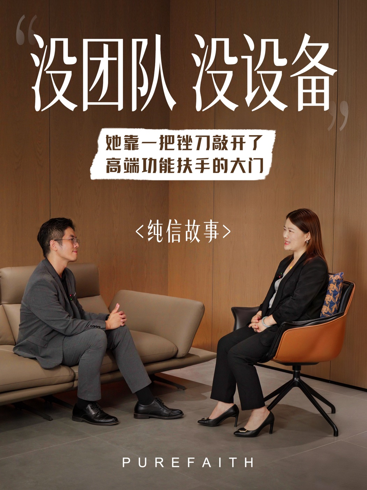

产品光影 / LIGHT & MATERIAL
产品光影短片
约 20 秒，黑白光影扫过网布、曲面和支撑结构，材质的纹理和轮廓构成整段画面的节奏。
B2B CONTENT / PUREFAITH
人体工学椅有很多功能可以讲，屏幕前的人却会先决定要不要继续看。镜头因此贴近网布和曲面，也把坐姿、工厂和讲述放进内容里。


SELECTED WORK
产品光影 / LIGHT & MATERIAL
约 20 秒，黑白光影扫过网布、曲面和支撑结构，材质的纹理和轮廓构成整段画面的节奏。
AI 创意 / 12 POSES
约 20 秒里，12 种坐姿接连出现。人体工学椅始终在画面中心，每一次坐下却都不一样。
创始人 IP / SERIES



看完以后，记住的不只是产品，还有光在网布上移动的瞬间、连续变化的坐姿，以及一段真实的讲述。